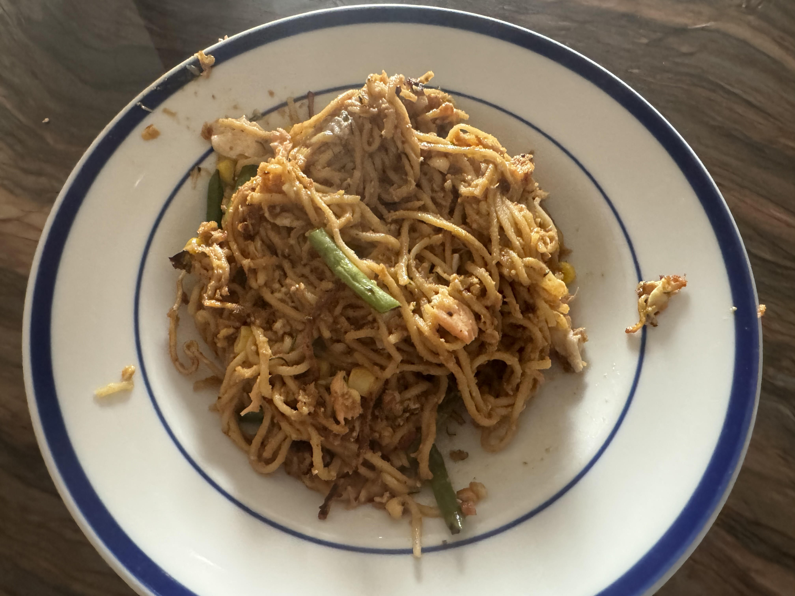

Home

Pad Thai Inspired Fried Noodles
Tofu and vegetables pan fried in green curry to create a crispy dish in a curry glaze.
Ingredients
Sauce
- 4 tsp. Soy Sauce
- 5 tsp. brown sugar
- 2 tsp. rice vinegar
- 4 tsp. crunchy peanutbutter (no added sugar)
Noodles
- Noodles (egg or ramen)
- Butter
- 1 clove garlic
- 1-2 eggs
- Partially cooked vegetables and/or protein, chopped to small pieces.
Instructions
- Cook noodles and mix the sauce
- In a small pan on medium-high, melth the butter then add garlic. Cook until fragrant.
- Stir fry noodles with egg.
- Mix in the vegetables and protein, fry until cooked.
- Mix in the sauce.